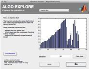

As more and more human knowledge is converted to (or created in) electronic formats, quick access to information through automated search interfaces is now a fundamental expectation. With cutting-edge innovations in the online search engine market—such as "instant search" and natural language processing—shaping user expectations for all types computer interactions, the selection of fast and efficient algorithms for finding specific items within a set and returning them in sorted order becomes all the more important.
One common search-related user interaction is to present the user with a list of items which is filtered to limit the items displayed as she types keystrokes matching the desired items. This is variously referred to as "typeahead-find," "find-as-you-type," and "autocomplete." The applications of this type of user interaction pattern are widespread; some examples are:
These interactions are so commonplace that it's easy to lose track of the sophisticated programming optimizations that are required to deliver matching results so quickly. The goal of this project is to illustrate the internal operations of several of the most commonly-taught sorting algorithms which might be experienced by an undergraduate engineering major, and to discuss the considerations (speed, space requirements, "stability" of the input set, and so on)
Team Disarray's ENED1091 final project, called EduRithm (Educational Demonstration of Algorithms) focuses on introducing Computer Science majors —and other Curious Persons—to a handful of the most common sorting algorithms taught in undergraduate-level CS courses: 1) Insertion Sort, 2) Selection Sort, 3) Bubble Sort, 4) Merge Sort , and 5) Quicksort. There are two major components of the interface:
See the Instructions for Use section below to get started using EduRithm right away!
Several other algorithms were planned, but not fully implemented version of EduRithm: quicksort with a 3-way partition (Quick3); Radix Sort; Tree Sort (sorting using a Binary Search Tree); and Quicksort implemented as a MEX compiled executable.
A very high-level overview of the "design problem" of choosing an appropriate sorting algorithms could be expressed in terms of selecting the appropriate solution given several key constraints of the system for which the sorting routine is being developed for, namely:
In other words, the outcome of a human-computer interaction—and the resulting frustration or satisfaction with that interaction—depends heavily on the engineering choices made in selecting the appropriate "tool for the job."
The algorithm descriptions to the right of the plot in the Algo-Explore application (see this screenshot) make reference to specific algorithms having performance benchmarks of "O(N2)" or "O(N·log(N))," which is explicitly written as N·log2(N) ("log base 2 of N"). This is colloquially referred to as the"Big O" notation, and it's spoken "order N squared" or "order N log N." The Insertion Sort and Selection Sort algorithms, for example, are "order N squared"; and Quicksort is on average N·log2(N) for mostly random input and a well-selected pivot.
Without delving too deeply into the mathematics behind the definition of "Big O," these expressions can be briefly explained as the relationship between input size and computational complexity for the task (usually directly perceived by humans as the amount of time the algorithm takes to finish), or input size and the amount of extra data storage required to perform the task.
An algorithm of O(N2) complexity will finish sooner than one of O(N·log(N)), because N ·log2(N) < N2 for all input sizes, N. Because constant multipliers are less relevant than log(N) or N2for very large N, these constants are ignored when expressing algorithmic complexity in Big O notation.
Some common "order of" expressions, in order of increasing complexity/run time, are listed below:
O(1)
(constant, i.e., independent of input size)
< O(N) (directly proportional to input
size)
< O(log N) < O(N log N)
<
O(N2) (proportional to the square
of input size)
< O(N3) <
O(2N) < O(N!) (N
factorial)
For more information on various sorting algorithms, including expressions of their performance and storage utilizations expressed in "Big O" notation, we recommend the following resources:
http://github.com/ernstki/ENED1091TeamDisarray/tags
Download the latest "tagged" release (which is "v1.0.1" as of this writing) as either a .zip or .tar.gz archive and extract the archive into a convenient place. This being done, open "AlgoLaunch.m" from within the "ENED1091TeamDisarray-<tag>" folder with MATLAB, and click the "Run AlgoLaunch.m" button (the green arrow) in the toolbar.
Extract TeamDisarray_ENED1091_final.zip to a convenient place; descend into the "EduRithm_v1.0" subfolder, and open the file called "AlgoLaunch.m" with MATLAB. Then click the "Run AlgoLaunch.m" button (the green arrow) in the MATLAB toolbar.
HINT : Usually, you can just double-click the .m file within the operating system's file manager to open directly in MATLAB.
The launcher window (shown at right) allows you to invoke either—or both—the algorithm explorer and the algorithm race application with a single click.
The drop-down list above the Algo-Explore button allows you to (optionally) select an algorithm to open with that interface.
A green message displayed beneath each button informs you of which applications are already open (or plotting), in case the figures are hidden behind other windows.
The ? button in the lower-right corner will open online help (this document) for the EduRithm program in a web browser.
>>
% From within the 'EduRithm' program
folder:
>> AlgoLaunch
The purpose of the Algo-Explore application is to visually examine the operation of several of the common sorting algorithms. Short text descriptions are given on the left hand side of the plot; more information about each algorithm can be viewed in a web browser by clicking the "Online Reference" button below the description pane.
The controls on the Algo-Explore figure have popup ("tooltip") help, which can be viewed by briefly hovering your mouse cursor over the control you want to know more about.
To run Algo-Explore for a specific algorithm, you can select an algorithm from the launch window, or choose the sort algorithm from the drop-down list at the top of the figure window. You can change the number of elements fed into the sort algorithm by modifying the value in the "Set Size" edit box (up to a maximum of 5000).
The Algo-Explore application can also be invoked from the MATLAB command line:
>>
% From within the 'EduRithm' program
folder:
>> AlgorithmExplore
The purpose of Algo-Race is to compare the speed and efficiency of different sorting techniques with different types of data sets. Underneath each figure is a drop-down menu from which a variety of different sorting algorithms are available. The output will be a graph of Time vs. Number of Items (N) in the input set. The input set options can be changed in the blue box located in the lower right. If you also enable the Plot Iterations option by ticking the appropriate checkbox (this works best for small input sizes less than about 500), you can watch the contents of the input set being sorted in real-time, as shown in the second figure to the right.
All controls on the Algo-Race figure have pop-up contextual help (a.k.a., "tooltips) which can be viewed by briefly hovering your mouse pointer over the control you want to learn more about.
The Max Input Size slider and edit box determine the size of the largest array the algorithm will sort. The first array sorted will contain 25 values and will sort multiple arrays increasing in size by 25 each time until the Max Input Size is reached. You can change the value using either the slider, or by typing an appropriate value into the edit box. Keep in mind that values much above 100 will result in slow operation if the Plot Iterations checkbox is also checked, which draws the contents of the input list on a bar chart as it's being sorted for each increment of the input size.
Some sorting algorithms work better under different types of constraints on the input set. The Input Characteristics option group will allow you to fill the array with different kinds of data sets: Random, Already Sorted (A)(scending), Already Sorted (D)(escending), and Few Unique (which means lots of duplicates). Some sorting algorithms are more efficient than others at dealing with various types of input, and these options allow you to test that. Quicksort, for example, is very fast for a random sampling of input data, but the meager Bubble Sort will vastly outperform Quicksort on data that is already sorted.
The Go button starts plotting with the first set of axes, for all increments of the input set size starting at 25, up toMax Input Size. The Close button doubles as a "Cancel" button to stop all the axes from plotting if you enter a Max Input Size value that's taking too long to finish.
To run Algo-Race, click the appropriate button on the launch window, then chose different sort algorithms for each figure from the drop-down menus below each set of axes, if desired. Click the "Go" button when you're ready to start the race.
The Algo-Race application can also be invoked from the MATLAB command line:
>>
% From within the 'EduRithm' program
folder:
>> AlgorithmRace
Recursive algorithms split the input data into smaller tasks and call themselves in a nested fashion to achieve the desired outcome. MATLAB places a limit on the number of recursive calls a function can make to prevent exhausting the resources of your computer and causing MATLAB to become unresponsive ("hang") or crash.
You may receive a message like the one below for an input size greater than about 5000 while using a recursive sort algorithm like Merge Sort or Quicksort:
Maximum recursion limit of 500 reached.
Use set(0,'RecursionLimit',N) to change the limit.
Be aware that exceeding your available stack space can crash MATLAB
and/or your computer.
The Team Disarray Sorting Algorithm Explorer incorporates ideas (and in some cases code) from the following MathWorks File Exchange projects:
One of the big challenges we faced as a group was implementing the sorting algorithms themselves in the MATLAB environment in their most raw form (i.e. not using any pre-implemented MATLAB functions). While a few algorithms were able to be overcome, we soon realized that they weren't necessarily the focus of the project and opted to use online resources to fill in the gaps.
Even so, the implementation of Quicksort we "borrowed" from Rosetta Code was a heavily "vectorized" version, relying on MATLAB's highly-optimized native element-by-element comparisons of one-dimensional vectors—and therefore exhibited better performance in its MATLAB implementation (closer to O[N] than the expected O[N ·log[N]]) than would've been expected from an implementation of the algorithm using only iteration over array elements and single-element comparison operators.
Another major challenge was deciding how we wanted the graphs to update in Race mode. Our original vision had all three running simultaneously, however, given the time constraints of the project and the difficulty in properly implementing this feature, we opted to disable this functionality prior to release.. We opted for low-delay comparisons between completed runs of each of the algorithms (the final product).
Several specific nuances of MATLAB GUI presented the group with some problems, too. One was that we decided to use of the UserData property of axes controls for storing data between iterations of the plotting routines. This seemed to be cleared out after each invocation, such that each set of axes in Algo-Race would "forget" its associated algorithm, so a separate routine had to be written (forceUpdateAllAxesUserData()) to update the UserData properties after each pass.
Another was the use of for loops to iterate over GUI handles returned by findobj. Much like "foreach" or "for x in" constructs from other programming languages, MATLAB's for can iterate over elements in a numerical or cell array, but only if, it's what MATLAB calls a "column vector," that is a one-dimensional vector consisting of just a single row—in the parlance of computer scientists, a regular "list" or "array." So in order to get a for loop to process all elements of the cell array returned by findobj, we discovered (after much frustration) that we needed to do a transpose using the MATLAB's "＇" (apostrophe) operator on the cell array before iterating over it in the loop.
While the project had its slim-downs and cut-backs (engineering "design constraints" which we took in stride), our original vision was ambitious enough to produce a solid finished product, with enough educational value, we hope, to benefit first-year Computer Science students—and other Curious Persons—in the future.